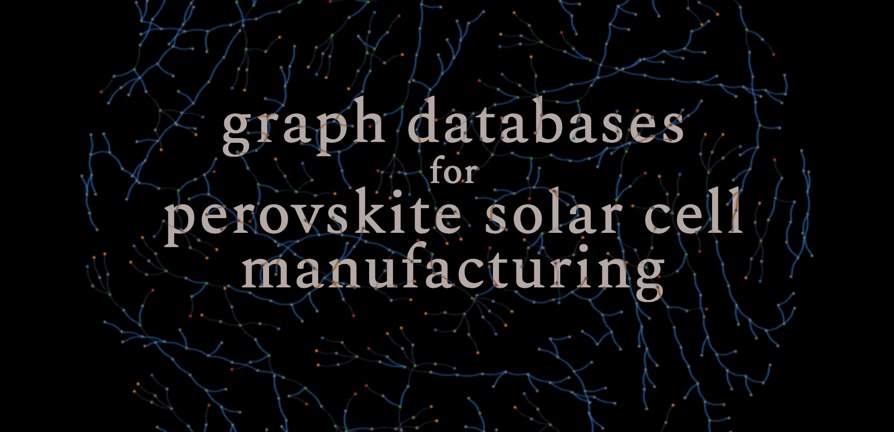
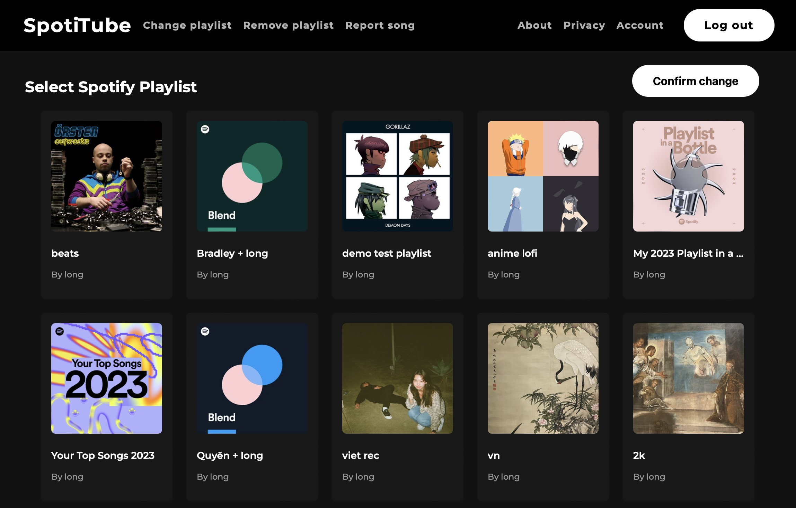
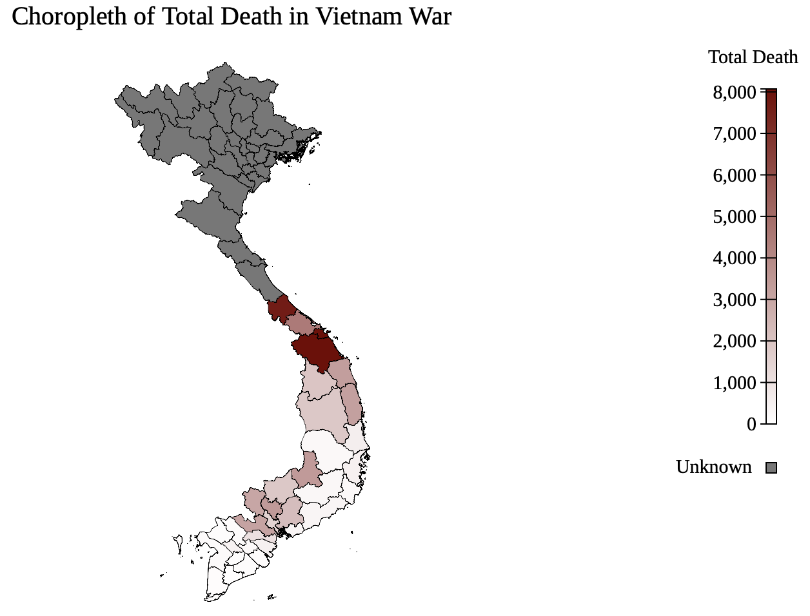
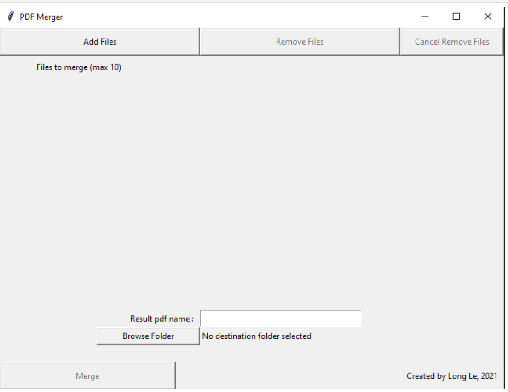

Electrical & Computer Engineering at USC. Formerly Data Science at UCSD. I bridge the gap between complex hardware systems and intelligent software architecture.
Currently pursuing my M.S. at USC. My work sits at the intersection of high-performance computing and actionable data science.
M.S. Electrical & Computer Engineering
B.S. Data Science
Designed a Neo4j graph database to optimize solar cell efficiency, transforming raw JSON streams into structured batch analysis pipelines.

Automated playlist migration tool using OAuth 2.0. Features a background scheduler for daily synchronization.

Interactive D3.js mapping and feature engineering to extract geological patterns from casualty data.

Lightweight Python application for batch processing. Built with a custom Tkinter GUI for seamless file management.
